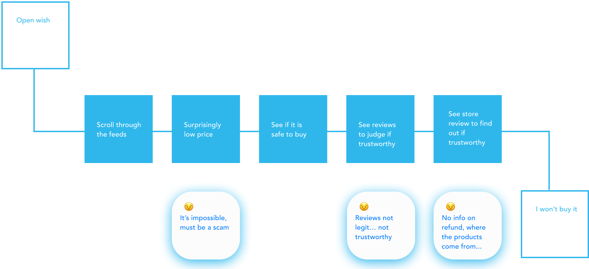

I decided to kick off the project by identifying what I know and what I don’t.
I first rummaged the internet and found following insights.
I explore my own user journey as a new user myself.

I then conducted 2 interviews and found following quotes are mentioned.
From the research I found Safety issue appeared many times so I decided to focus on one problem - safety
From research, I already found what are factors that affect shoppers' sense of safety: Product reviews, vendor reviews, refund policy… but what factors should I focus on? I dig more online to land on a decision.
I decided to focus on seller review and try to design the key feature as: Building the sense of safety - how to tell a convincing story. I ideated from a perspective of Public relations on trust building and decided the following goals.
Then I build wireframes to test my concept with 1 feedback session.
From the session, I learned following, and thought more on polishing these design details.
Then I took a lot of screen shots, mimicked wish's design system to develop the hifi prototype. I tried to use color as a salient UI element to convey the sense of safety.
I also conducted a feedback session for hifi prototype. Due to time constraints, I did not touch the whole flow of this feature, and need to polish more on details.
I looked back on the user journey I identified at the beginning to see if my solution has an impact.
Not bad! My solution of building seller trust seems to potentially improve user retention, engagement, and finally sales.
Due to time constraints, this concept is only completed for the first half. What would happen after you follow a store? How to see following stores? How to blend in following store products into feed?
Due to time constraints, the research is limited and most qualitative. If possible, I would like to conduct usability studies to better measure the success of my solution.
How to maintain overall visual consistency while hightlighing the safety and trust information? I think I need to explore more on visual details.